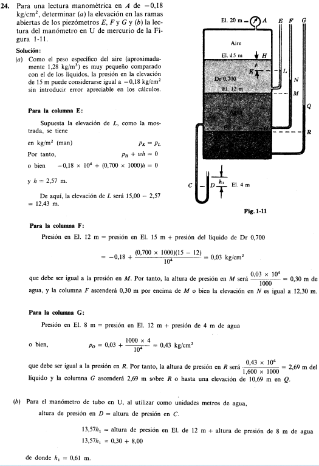

Mecanica de Fluidos:
La mecánica de fluidos es la rama de la física comprendida dentro de la mecánica de medios continuos que estudia el movimiento de los fluidos, así como las fuerzas que lo provocan. La característica fundamental que define a los fluidos es su incapacidad para resistir esfuerzos cortantes.
Glosario de conceptos:
- Masa:
- - Es la propiedad deun cuerpo de fluido que se mide por su inercia a un cambio de movimiento
- Peso:
- - Es la cantidad que pesa un cuerpo, es decir, la fuerza con que un peso es atraido a la tierra por la accion de la gravedad. Esta Relacionada con la masa y aceleracion debido a la gravedad, por la ley de newton
- * Ecuacion: peso = masa * gravedad
- Fuerza:
- - Es una magnitud vectorial que mide la intensidad del intercambio de momento lineal entre dos cuerpos.
- Presion:
- Es la cantidad de fuerza ejercida sobe una area unitaria de una sustancia
- Ecuacion: P = fuerza/area
- Principio de presion:
- - La presion actua uniformemente en todas las direcciones sobre un pequeño volumen de fluidos
- - En un fluido confinado entre frontera y salida, la presion actua perpendicular a la frontera
- Compresibilidad
- - Se refiere al cambio de volumen de una sustancia que esta sujeta a un cambio de presion que se ejerce en ella. Se utiliza el modulo volumetrico de elasticidad
- Densidad
- - Es la cantidad de masa por unidad de volumen de una sustancia.
- * Ecuacion: ρ = masa/volumen
- Peso especifico:
- - Es la cantidad de peso por unidad de volumen de una sustancia, represantada con la letra gamma(ɣ)
- * Ecuacion: ɣ = peso/volumen
- Gravedad especifica
- - El fluido de referencia es el agua a 4°C a tal temperatura, el agua posee su densidad mas grande. Gracias a eso la densidad especifica se puede definir como el cociente de la densidad de una sustancia entre la densidad del agua a 4°C o el cociente entre del penso especifico de la sustancia con el peso especifico del agua a tal grados.
- Viscosidad:
- - Es la propiedad de un fluido que ofrece resistencia al movimiento relativo de sus moleculas. La perdida de energia debido a la friccion que se debe a su viscosidad
- Presion absoluta:
- - Es la presion que se mide en relacion al vacio perfecto, pues Pabsoluta = Pmanometrica + Patmosferica.
Ejercicio º 1:
Ejercicio º 2:
Ejercicio º 3
Videos referenciales:
Informacion recomendada
Universidad de Guanajuato: Blog de Mecanica de Fluidos
Universidad de Alicante: PDF Recomendado